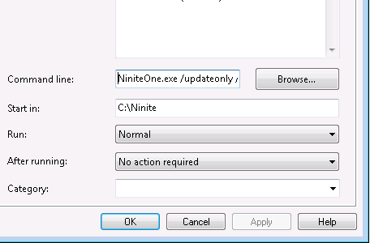

Kristjan Hansen of Statnett has kindly contributed some notes on using Ninite Pro with SCCM.
We use Ninite for two things:
The first thing we do is to make a package, we called this package Ninite Online Installer
In this package source we have the NinitePro.exe file and a command file that is used to copy the Ninite file to a computer.
Under package programs we have the programs for installing a selected software, Copying the Ninite file to a local folder and one for updating all applications.
To install a selected software like Adobe Reader we use the following command: NinitePro.exe /select reader /silent "C:\Ninite\Logs\Install-Reader.txt" /disableautoupdate /disableshortcuts /allusers This program runs from c:\Ninite on the users computer where we have stored the NinitePro.exe file
The program to update all applications has the following command: NinitePro.exe /updateonly /silent C:\ninite\logs\log.txt /disableautoupdate /disableshortcuts /allusers
And looks like this:

We have advertised this program to a collection containing all Windows 7 computers, we run this advertisement on a schedule every 2. Days. The advertisement is also set to Always rerun
This way all our computers are allways updated with the latest sofware versions, and we don't have to make a new package everytime a new software version from for example Adobe comes.
Thanks Kristjan!
If you have other tips or feedback on using Ninite with SCCM, please let us know. Thanks!
These features are only available in Ninite Pro Classic.
We're working on documentation for the new Pro web interface. For now the available help for that is inline in the interface.